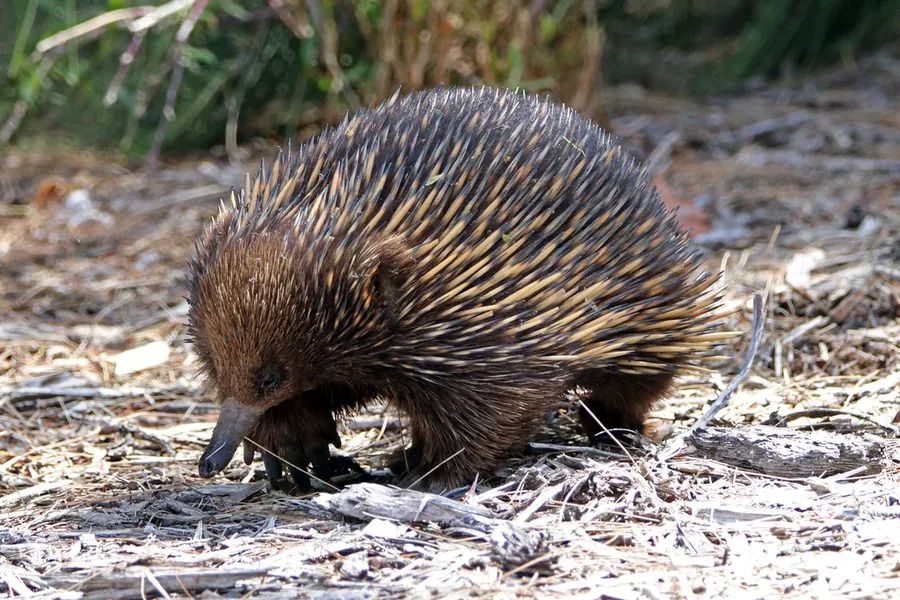

哺乳动物 · 动物界
针鼹 Tachyglossus aculeatus

澳大利亚和新几内亚的卵生哺乳动物，全身覆盖尖刺、吻部细长，用黏性长舌舔食蚂蚁和白蚁，会挖洞躲避危险。
- 分类
- 门脊索动物门纲哺乳纲目单孔目科针鼹科属针鼹属
- 栖息环境
- 森林、灌丛、草原与沙漠等多种陆地环境
- 地理分布
- 澳大利亚和新几内亚
- 保护级别
- IUCN 无危（LC）；非中国分布物种
物种志
针鼹体长 30–45 厘米，体重 2.5–7 千克，雄性略大。它的背部覆盖黄褐色与黑色相间的尖刺，腹部有柔软的毛；吻部细长呈管状，没有牙齿，舌头长而黏，可以伸出 18 厘米；四肢强壮，前爪适合挖掘。
针鼹分布于澳大利亚和新几内亚，栖息在森林、灌丛、草原和沙漠等多种环境。它白天躲在自己挖掘的洞穴中，夜间外出寻找蚂蚁和白蚁，用长舌舔食，也会吞入泥沙帮助磨碎食物。针鼹是卵生哺乳动物，雌性产下 1 枚软壳卵，把卵放入腹部的育儿袋中孵化约 10 天，幼仔在袋中舔食乳汁。它没有固定的体温，会随环境温度变化。针鼹寿命可达 30–50 年，目前被列为无危。
形态与习性
- 食性蚂蚁和白蚁
- 体长30–45 cm
- 体重2.5–7 kg
- 寿命30–50 年
- 繁殖产 1 枚软壳卵，孵化约 10 天
- 舌头可伸出约 18 cm
趣味知识
- 针鼹是卵生哺乳动物，雌性产下软壳卵后放入育儿袋。
- 它的舌头可伸出约 18 厘米，用来舔食蚂蚁和白蚁。
- 针鼹没有固定体温，会随环境温度变化。